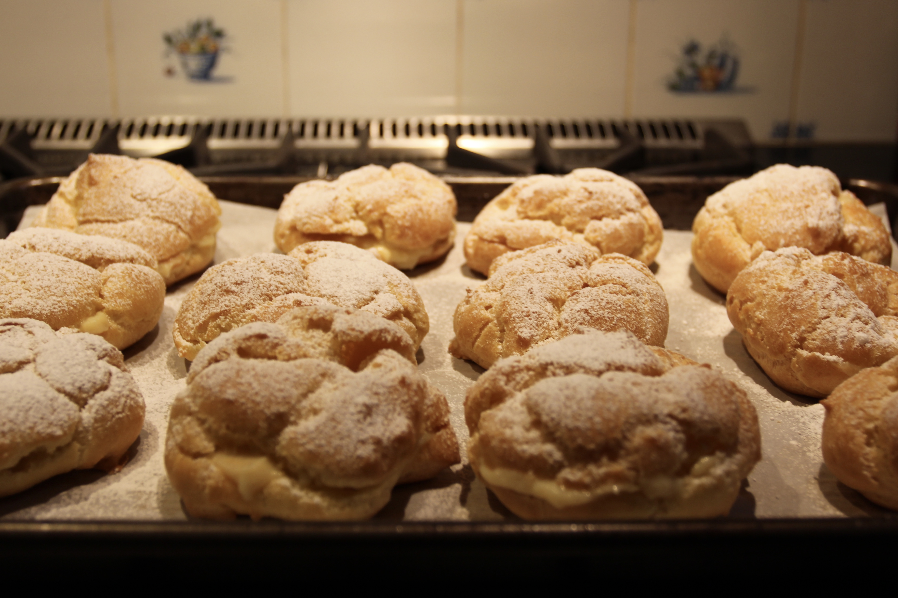

Easy Eclairs
 Effort: Easy/Medium30 mins (Prep), 40 mins (Bake)
Ingredients
Pâte à Choux Pastry
- 1 stick butter (8 tablespoons)
- 200 mL (0.85 cup) water
- 6 eggs
- 1 cup flour
- Pinch of salt
Custard
- 2 cups milk
- 2 eggs
- 100 mL (~0.4 cup) white sugar
- 2 tablespoons pastry flour
- 1 tablespoon vanilla extract
- 3 tablespoons butter
Preparation
Pâte à Choux Pastry
- Preheat oven to 375 degrees Farenheit.
- Boil water in pot over stove. Add stick of butter and simmer until butter is melted. Let boil for 3 minutes.
- Take water/butter mix off the stove. Add flour and pinch of salt and quickly mix until smooth.
- Put this dough back on medium stove heat and mix for 3-5 minutes.
- Take the dough off the stove and put it, while hot, in the stand mixer. Use a paddle attachment and set the mixer to low speed, adding in six eggs one at a time.
- Use medium ice cream scoop or equivalent to place pastry on baking sheet covered in parchment paper. Scoops should be roughly one inch apart.
- Bake for 40-50 minutes. Make sure to turn baking sheet around halfway (20 mins in) to bake eclairs evenly. Eclairs should be golden and baked through.


Custard
- Bring milk with vanilla to a boil over the stove.
- In a separate bowl ("bowl 1"), combine flour and sugar. Mix well with a fork or spoon.
- In a separate bowl ("bowl 2"), beat two eggs. This bowl should be medium/large size.
- Add the flour and sugar from bowl 1 into the egg bowl (bowl 2). Whisk together.
- Pour the hot milk into bowl 2, beating the milk into the egg/flour/sugar mix gradually with a mixer. Make sure the mix does not overflow.
- Pour the milk/egg/flour/sugar mix from bowl 2 back into a stovepot and mix until it boils and thickens. Mix constantly over low heat.
- Take custard off the heat, add in butter, and mix until the butter dissolves.


Putting it all together
- Slice eclairs midway (just enough to open them like a clam). Use a spoon to stuff in custard.
- (Optional) Use a sifter to coat eclair tops with powdered sugar.